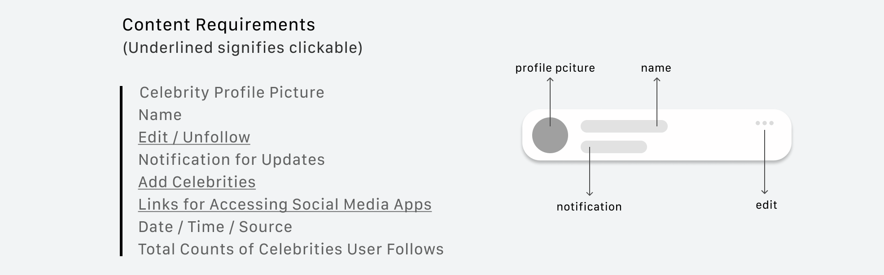
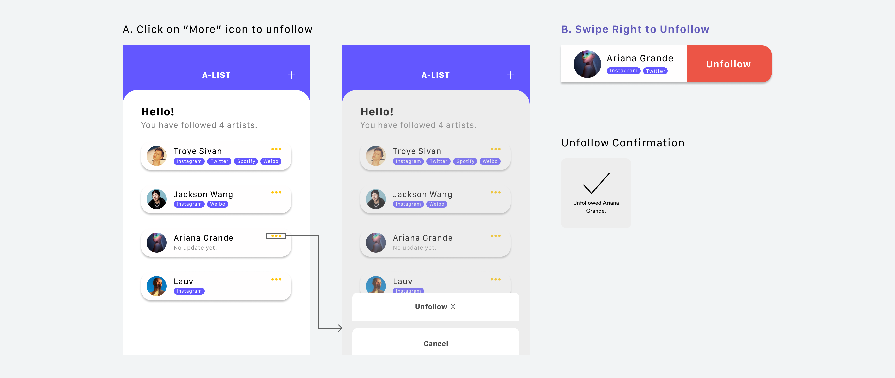
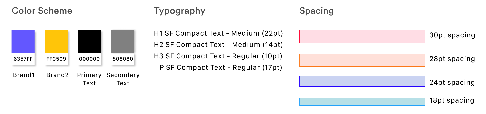

December 2019
(2 Weeks)
2 iOS Developers
1 Backend Developer
1 Designer
Designer
Figma
Pen & Paper
Today, many people connect with each other through internet. Celebrities around the world share their daily moments or latest works with the public via all kinds of social media apps. Like the general public, we follow celebrities we like on platforms, such as Instagram, Twitter, Weibo, etc.
However, we discovered that these social media usually include contents like friend activity, advertisements, etc. that could potentially prevent users from accessing real-time updates of the celebrities. Also, with the large amount of social media accounts a celebrity owns, it is difficult to keep track of all the activities of that one individual.
People want to have access to the newest updates of the celebrities they like. However, this is hard because:
The apps usually contain irrelevant content.
Switching between apps is annoying.
Therefore, my team decided to build an app that solves this problem during Cornell AppDev Hack Challenge.
Based on the goals, I brainstormed the content requirements for the app and listed out several important elements to include in my design.
Content Requirements

Initial Sketch
In the initial approach for designing the page for individual celebrity, I was considering to display an image of the celebrity at the bottom. Yet, I realized that it did not solve the People Problem we proposed because it is meaningless and takes up too much space.
Visual Explorations for the Main Feed
Option A displayed the list of celebrities vertically. The notification icon for new updates is straightforward. Option B displayed the list in both vertical and horizontal directions and has one notification icon. However, this option failed to provide enough breathing space due to the width constraint. Also, it could be very troublesome if the celebrity’s name is long. Similar to Option A, C displayed the list vertically and had notification icons that indicate which specific social media were updated. This feature enabled the users to see what was updated right away without directing to the celebrity’s page. So, Option C aligned the most with the People Problem. I decided to pursue C.
More Elements
These are the important elements I incorporated for following celebrities. The search bar allows the users to quickly find the celebrities that they wish to follow. Also, celebrities are categorized based on regions, so that the users can view a list of celebrities from the region they selected.
Iterations for Unfollowing Celebrities
I created two different iterations for unfollowing a celebrity. Initially, I proposed Option A, in which the users need to click on the “More” button. After performing several user testings, I learned that the hit area was too small, so the users often direct to the detail view of the celebrity by accident. I pursued Option B because it provides a more efficient way for users to unfollow celebrities.
Celebrity's Detail View
Here is the UI Kit that I generated. #6357FF and #FFC509 were used as the brand color because both of them convey a sense of fun and enthusiasm.
UI Kit
I built a prototype that shows the full flow of the app including all the features I incorporated in the design.
A-LIST is the very first project that I worked in a team as a product designer, and I redesigned the app after the 2-weeks Cornell AppDev Hack Challenge. Due to the time constraint and our inexperience in app development, our team was not able to implement all of the desired features. Yet, there were still many takeaways after reflecting on the project.
I became better at describing my design decisions. As the only designer in our team, I needed to provide explanations for how my design solves the problem that we proposed. Therefore, communication was the key to ensure everything goes smoothly. I also learned the importance of conducting user testings. Sometimes, it's hard to see the flaws in my own design, so user testings are incredibly helpful during the process. In the future, I would like to conduct more user testings to further refine my design and explore other purposeful interactions.😆